首頁 › 主題 › 好吃食物
🍔 好吃食物拼圖
漢堡、披薩、水餃、拉麵、牛奶、紅蘿蔔、玉米……這個主題收錄 16 種日常飲食，從主食到點心、飲料與蔬菜，帶孩子認識食物名稱，並聊聊均衡飲食。
可以選擇 9、12 或 16 片，並切換拼圖形或方塊，由簡單到困難慢慢挑戰。免費、免註冊。
這個主題裡有什麼？（共 16 張）
點選任一張圖片，就可以直接開始拼。
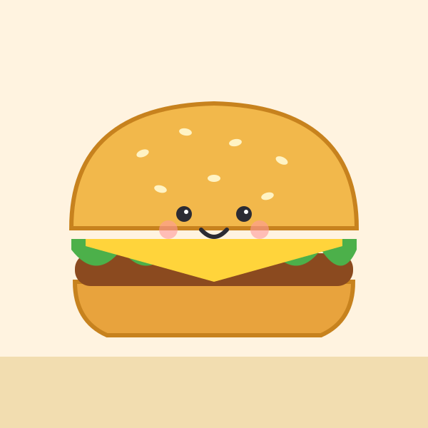
漢堡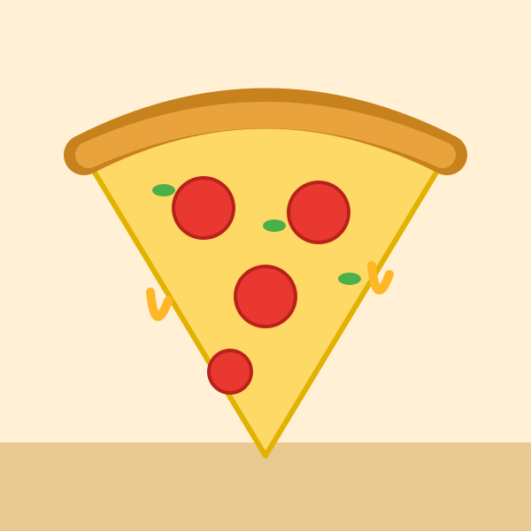
披薩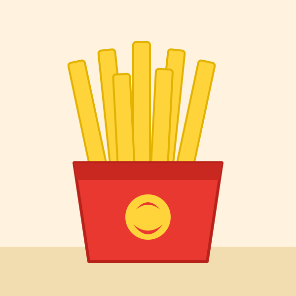
薯條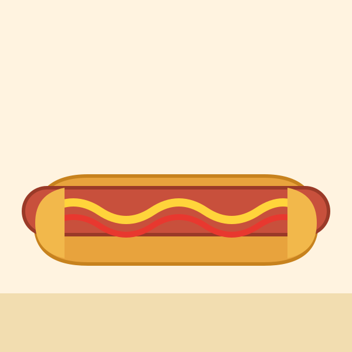
熱狗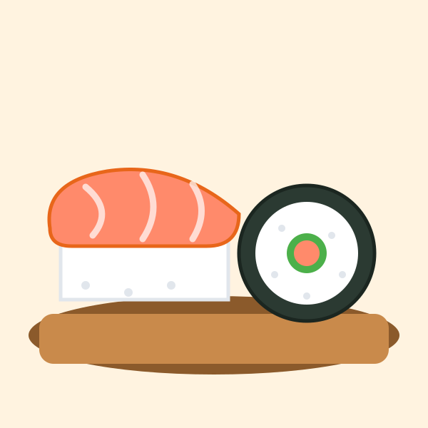
壽司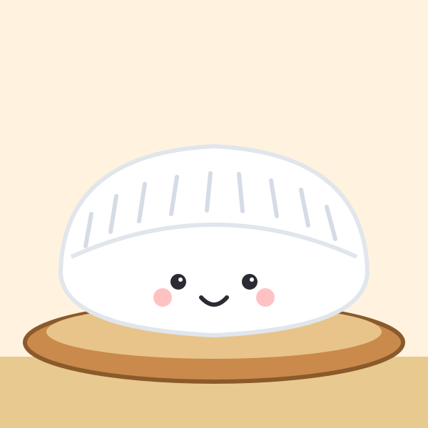
水餃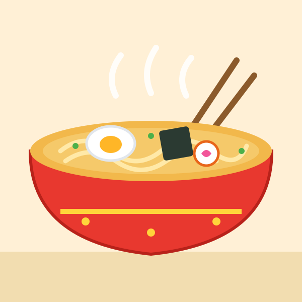
拉麵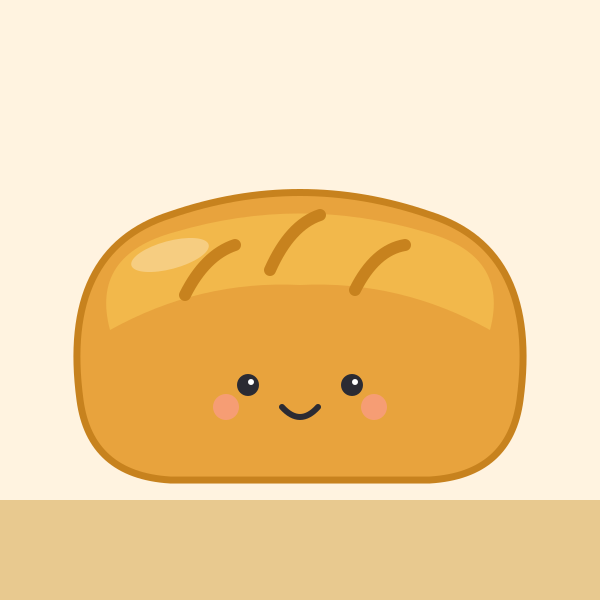
麵包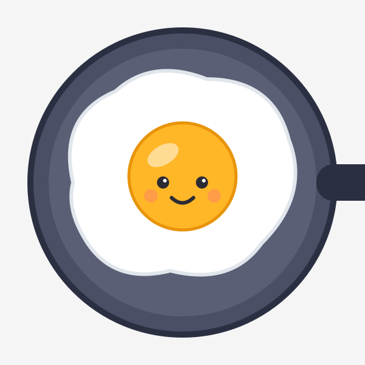
荷包蛋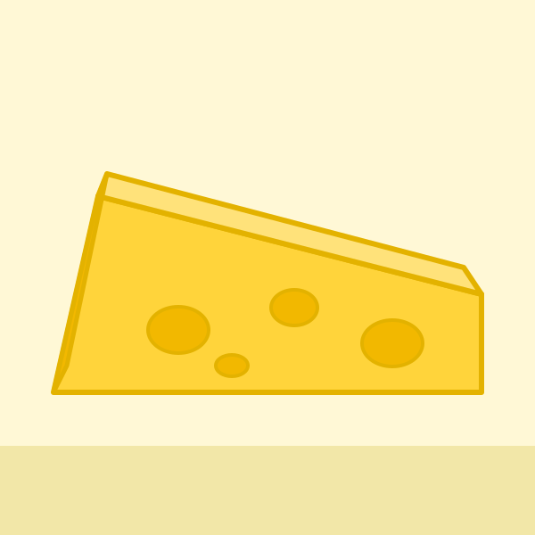
起司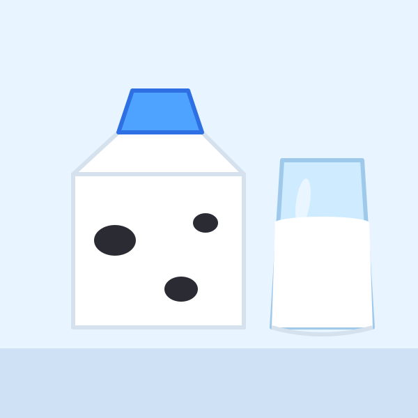
牛奶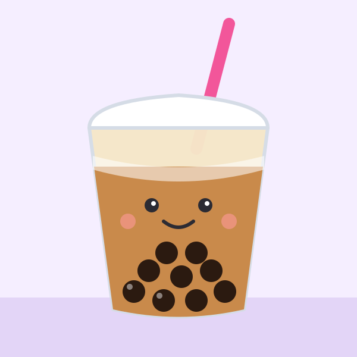
珍珠奶茶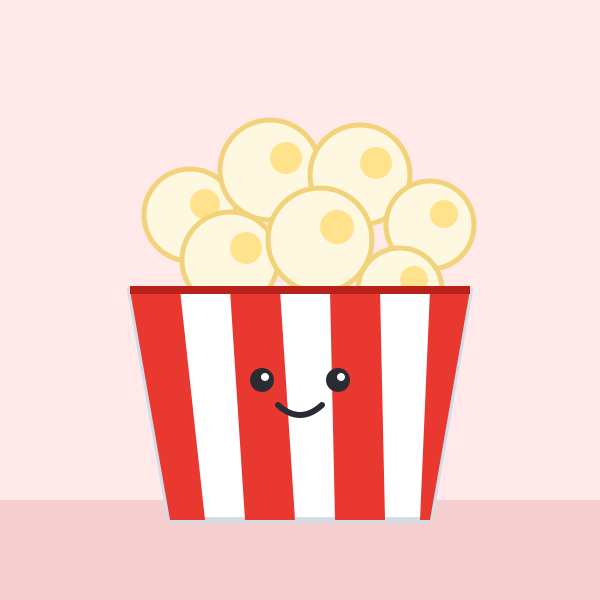
爆米花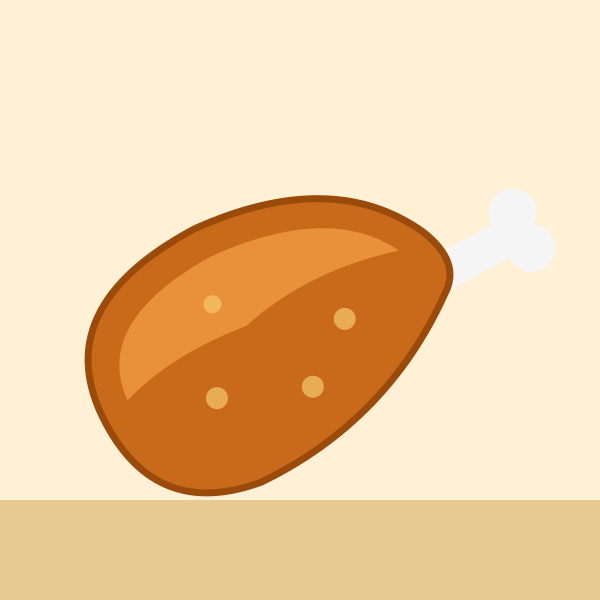
雞腿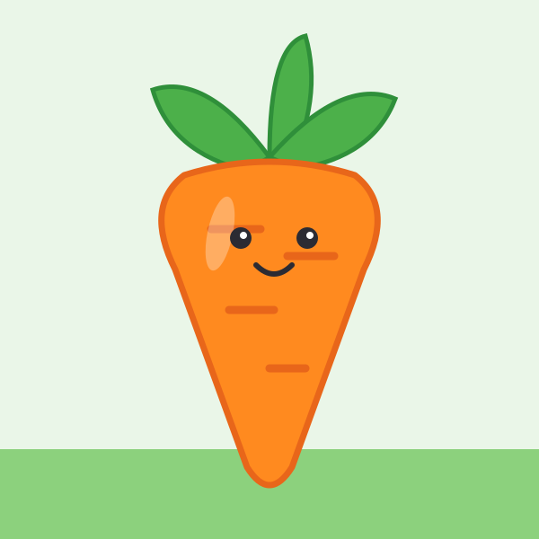
紅蘿蔔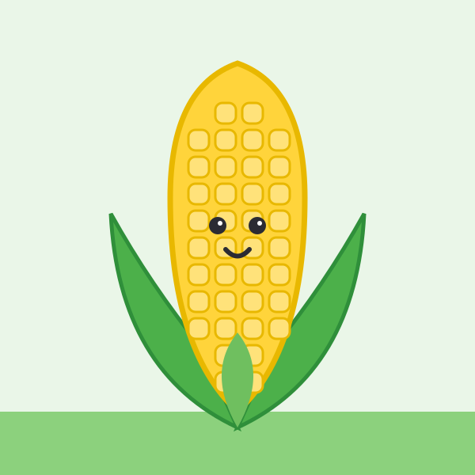
玉米
學習重點
- 認識常見食物與餐點的名稱
- 分辨主食、蔬菜、蛋奶肉類等食物類別
- 建立不挑食、均衡飲食的概念
和孩子一起聊聊
拼完之後，可以試著問孩子：
- 這是什麼？你吃過嗎？
- 早餐、午餐、晚餐你喜歡吃什麼？
- 蔬菜為什麼也要吃？